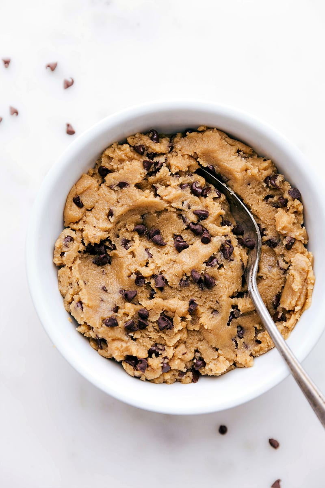

Cookie dough recipe

Description
This is a delicious cookie dough recipe for anyone to enjoy. Let's get started !
Ingredients
- 8 tbsp. unsalted butter (1 stick), room temperature
- 1 cup brown sugar, packed
- 2 tbsp. heavy cream
- 1 tsp. vanilla extract
- ½ tsp. kosher salt
- 1 cup flour
- ½ cup chocolate chips
Steps
- Gather all your ingredients.
- First, heat treat the flour to ensure it is safe to eat. Do not skip this step, untreated flour can contain contaminants and is not safe to eat. Place the flour in a microwave safe bowl and microwave on high in 30-second intervals, stirring in between. Use an instant-read thermometer to ensure that the flour reaches 74°C throughout.
- In a stand mixer or using a hand mixer, beat together the butter and sugar until light and fluffy.
- Add the vanilla, cream, and salt. Mix to combine. Then add the heat treated flour and mix to incorporate.
- Fold in the chocolate chips.
- Serve and enjoy! Store in an airtight container in the refrigerator.